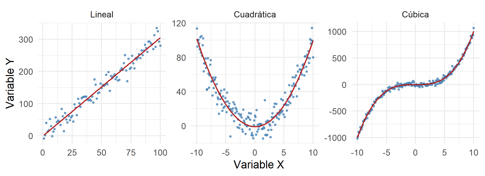
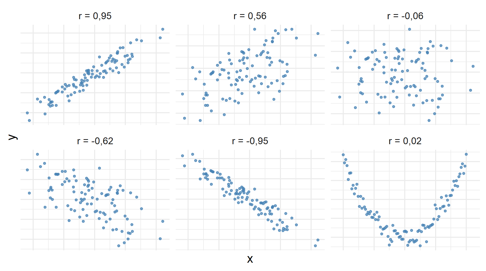
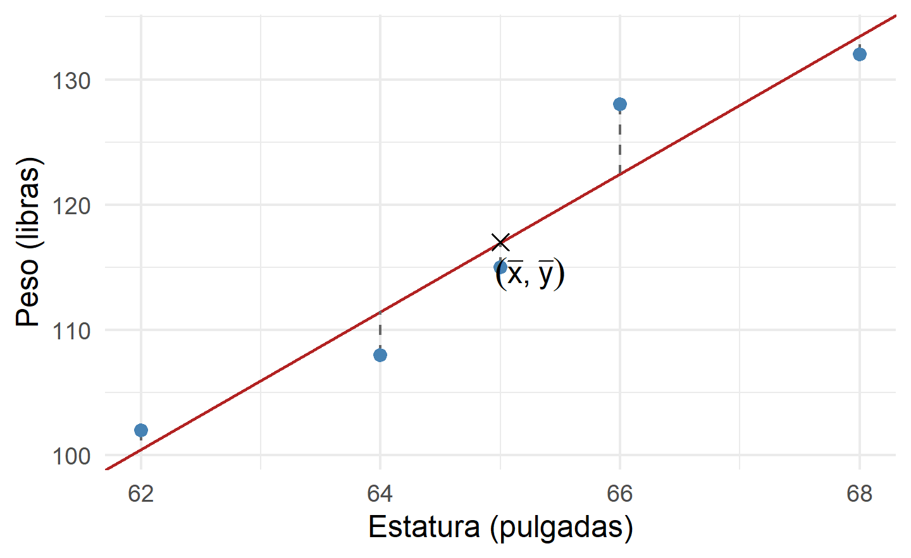
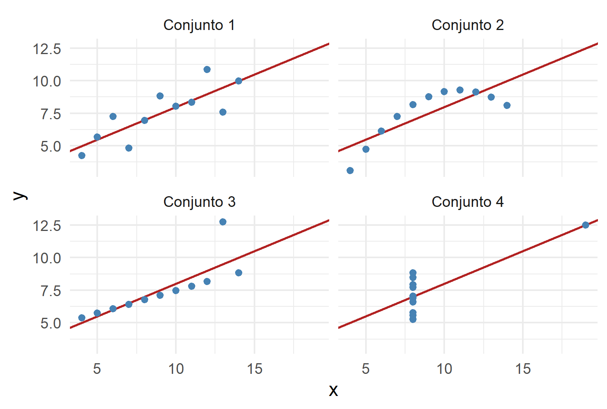
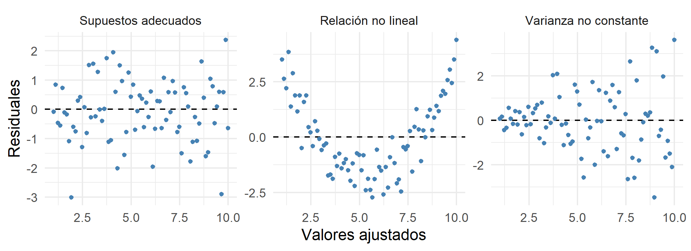
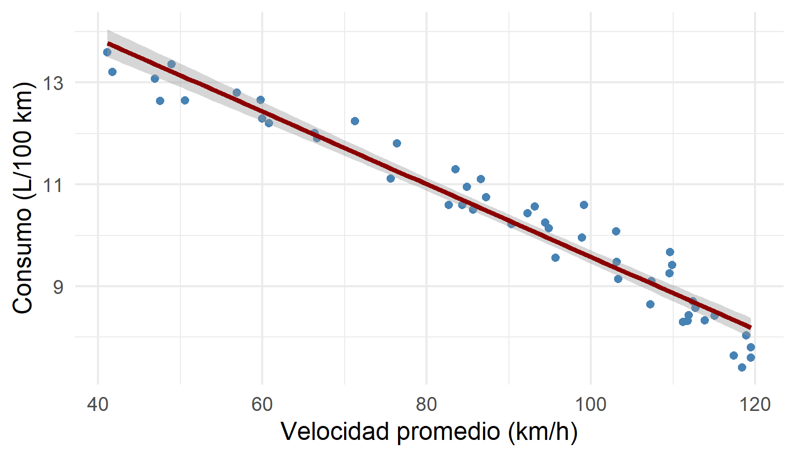
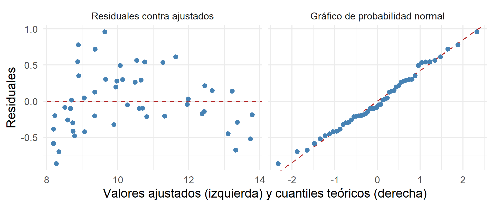

Estadística II
Escuela de Matemáticas · Universidad Industrial de Santander
¿Cuánto aumentan las ventas por cada millón invertido en publicidad? ¿Cómo cambia el consumo de combustible con la velocidad?
La regresión modela la relación entre una variable dependiente \(Y\) y una o más variables independientes \(X\), para describirla y para predecir \(Y\).
| Área | Ejemplo |
|---|---|
| Economía | Consumo de los hogares según el ingreso |
| Salud | Dosis de un fármaco y efecto clínico |
| Ingeniería | Temperatura y resistencia de un material |
| Ambiente | Contaminantes y enfermedades respiratorias |
“La formulación de un problema es a menudo más importante que su solución.” — Albert Einstein
Es un error iniciar un análisis sin tener claros los objetivos ni saber si los datos son apropiados (Faraway, 2002, p. 8).
pima768 mujeres del pueblo Pima; presión diastólica (Faraway, 2002, p. 9):
Sin el análisis inicial, todo lo demás quedaría distorsionado.

La regresión lineal simple es adecuada para el primero.
\[ r = \frac{S_{xy}}{\sqrt{S_{xx}\,S_{yy}}}, \qquad S_{xy} = \sum (x_i - \bar{x})(y_i - \bar{y}) \]

Helados y ahogamientos en piscinas están correlacionados… porque ambos aumentan en verano.
\[ Y = \beta_0 + \beta_1 X + \varepsilon \]
Supuestos (Montgomery et al., 2012, p. 12; Walpole et al., 2012, pp. 390-394): \(\varepsilon_i \sim N(0, \sigma^2)\), independientes. Es decir, media cero, varianza constante, normalidad e independencia.
Porque es lineal en los parámetros \(\beta_0, \beta_1\) (Montgomery et al., 2012, pp. 4, 69).
Minimizar \(\displaystyle S(\beta_0, \beta_1) = \sum \big[y_i - (\beta_0 + \beta_1 x_i)\big]^2\):
\[ \hat{\beta}_1 = \frac{S_{xy}}{S_{xx}}, \qquad \hat{\beta}_0 = \bar{y} - \hat{\beta}_1\bar{x}, \qquad \hat{y} = \hat{\beta}_0 + \hat{\beta}_1 x \]
Residual: \(\quad e_i = y_i - \hat{y}_i\)
Propiedades: \(\sum e_i = 0\) y la recta pasa por \((\bar{x}, \bar{y})\) (Montgomery et al., 2012, pp. 19-20).

\(\hat{y} = -240{,}5 + 5{,}5\,x\): cada pulgada adicional, 5,5 libras más en promedio.
Cuidado con extrapolar
Solo dentro del rango observado (62 a 68 pulgadas): para 40 pulgadas, la recta “predice” un peso negativo (Montgomery et al., 2012, p. 4).
\[ \underbrace{\sum (y_i - \bar{y})^2}_{STC} = \underbrace{\sum (\hat{y}_i - \bar{y})^2}_{SCR} + \underbrace{\sum (y_i - \hat{y}_i)^2}_{SCE} \]
(Walpole et al., 2012, p. 414)
\[ R^2 = \frac{SCR}{STC} = 1 - \frac{SCE}{STC} \]
Nadadoras: \(R^2 = 605/656 = 0{,}922\): la estatura explica el 92,2 % de la variabilidad del peso. En regresión simple, \(R^2 = r^2\).
Depende del área (Faraway, 2002, p. 22):
Un \(R^2\) alto no garantiza que el modelo sea adecuado: hay que revisar los residuales (Montgomery et al., 2012, pp. 36, 129).
\[ s^2 = CME = \frac{SCE}{n - 2} \qquad s(\hat{\beta}_1) = \frac{s}{\sqrt{S_{xx}}} \]
Intervalo: \(\quad \hat{\beta}_1 \pm t_{1-\alpha/2;\,n-2}\; s(\hat{\beta}_1)\)
Prueba de \(H_0: \beta_1 = 0\): \(\quad T = \dfrac{\hat{\beta}_1}{s(\hat{\beta}_1)} \sim t(n - 2)\) (Walpole et al., 2012, p. 404)
Nadadoras: \(s(\hat{\beta}_1) = 0{,}922\); intervalo del 95 %: \((2{,}57;\ 8{,}43)\); \(t_{\text{obs}} = 5{,}97\), valor p \(= 0{,}009\).
| Fuente | SC | gl | CM | \(F\) |
|---|---|---|---|---|
| Regresión | \(SCR\) | 1 | \(CMR = SCR/1\) | \(CMR/CME\) |
| Error | \(SCE\) | \(n - 2\) | \(CME\) | |
| Total | \(STC\) | \(n - 1\) |
Nadadoras: \(f_{\text{obs}} = 605/17 = 35{,}59 = 5{,}97^2\).
En regresión simple, \(F = t^2\): las dos pruebas son equivalentes.
El de predicción es siempre más ancho: incluye la variabilidad de cada observación. Ambos son más angostos cerca de \(\bar{x}\) (Montgomery et al., 2012, pp. 31-33).

Misma recta y mismo \(R^2\)… ¡siempre hay que graficar! (Anscombe, 1973)

Banda horizontal: bien. Curva: no linealidad. Embudo: varianza no constante (Montgomery et al., 2012, p. 129).
Con muestras grandes, las pruebas detectan desviaciones sin importancia práctica: los gráficos siguen siendo la herramienta principal (Faraway, 2002, p. 90).

\(r = -0{,}971\): relación lineal negativa muy fuerte.
Call:
lm(formula = consumo ~ velocidad, data = combustible)
Residuals:
Min 1Q Median 3Q Max
-0.86666 -0.28387 -0.06774 0.28936 0.96364
Coefficients:
Estimate Std. Error t value Pr(>|t|)
(Intercept) 16.711709 0.233016 71.72 <2e-16 ***
velocidad -0.071339 0.002526 -28.24 <2e-16 ***
---
Signif. codes: 0 '***' 0.001 '**' 0.01 '*' 0.05 '.' 0.1 ' ' 1
Residual standard error: 0.42 on 48 degrees of freedom
Multiple R-squared: 0.9432, Adjusted R-squared: 0.9421
F-statistic: 797.7 on 1 and 48 DF, p-value: < 2.2e-16
Banda sin patrones y puntos sobre la recta; Shapiro-Wilk: valor p \(= 0{,}84\). Los supuestos son razonables.
| Tarea | Función |
|---|---|
| Ajustar el modelo | lm(y ~ x, data = datos) |
| Coeficientes, pruebas, \(R^2\) | summary(modelo) |
| Intervalos para \(\beta\) | confint(modelo) |
| Tabla ANOVA | anova(modelo) |
| Predicción | predict(modelo, nuevos, interval = ) |
| Diagnóstico | plot(modelo), shapiro.test(residuals(modelo)) |
datos/velocidad_consumo.csv.Estadística II · UIS